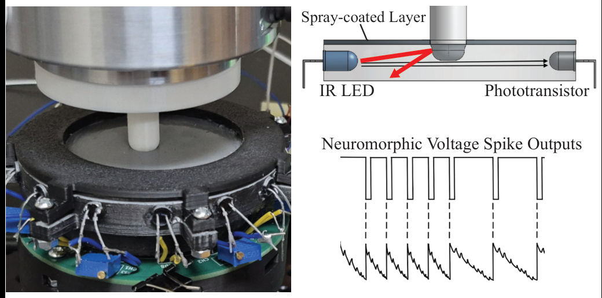
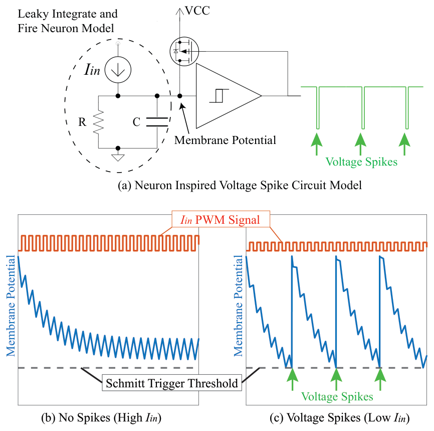
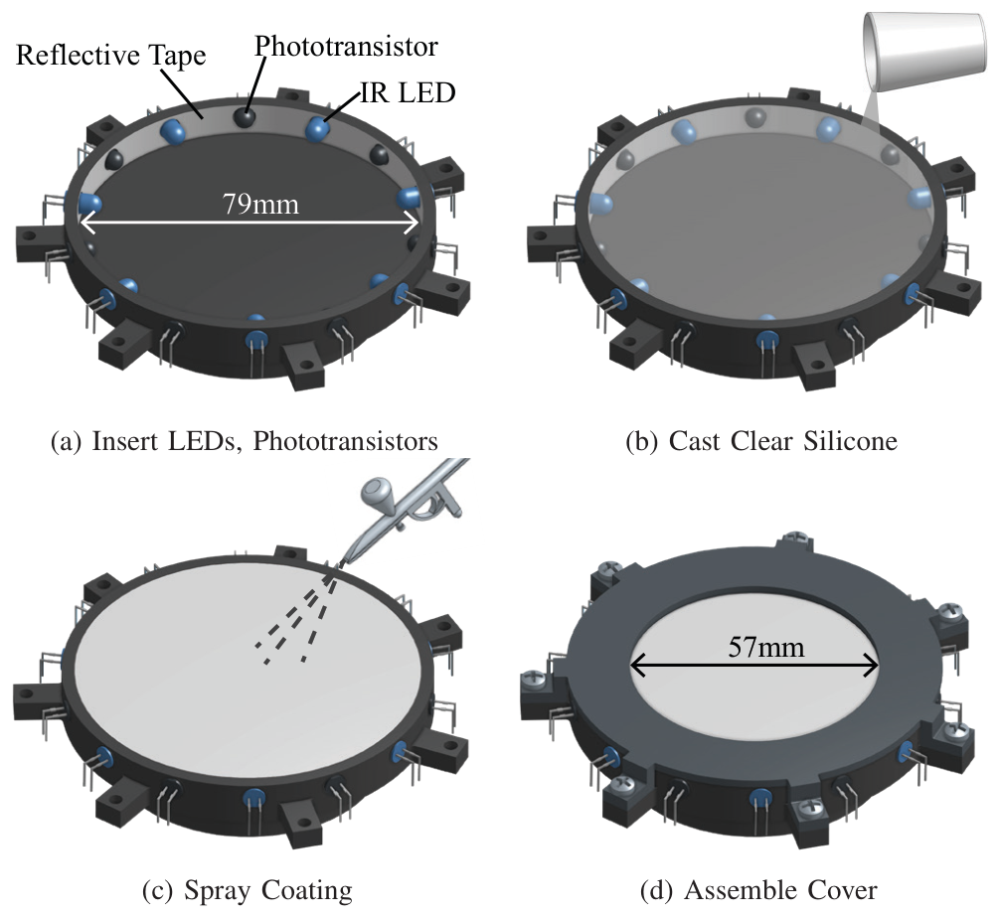
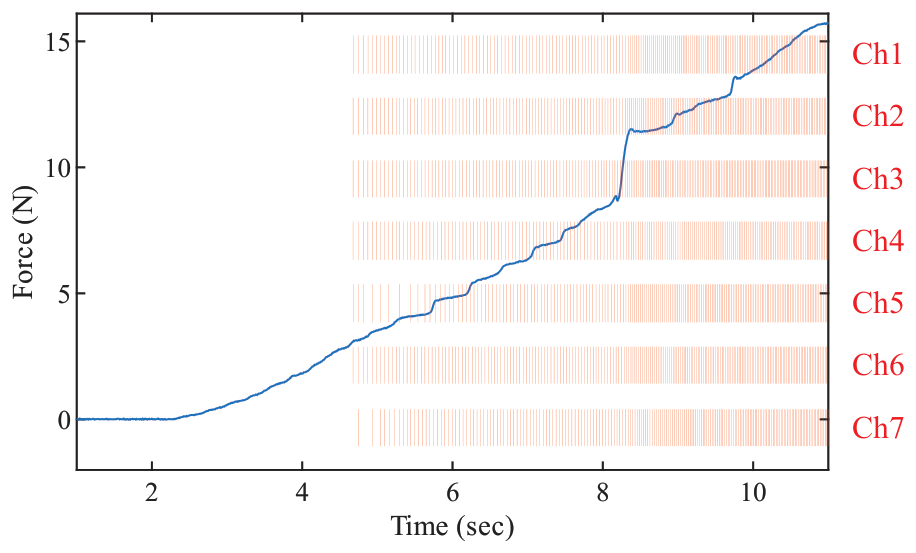
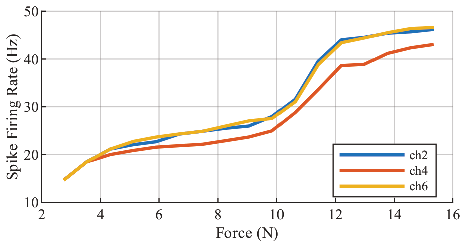
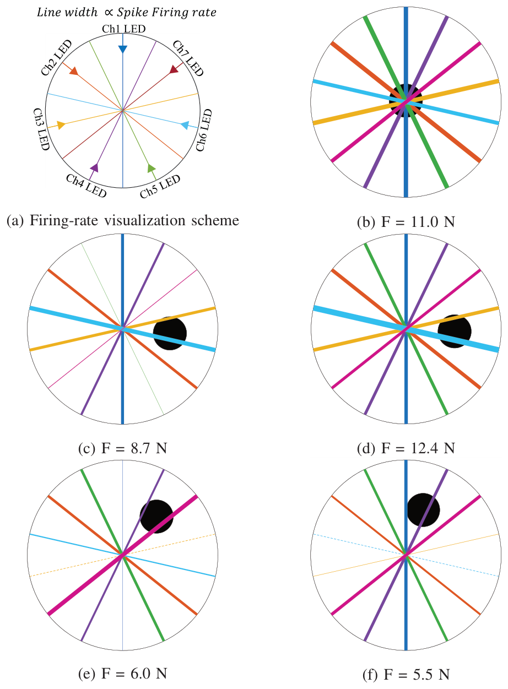
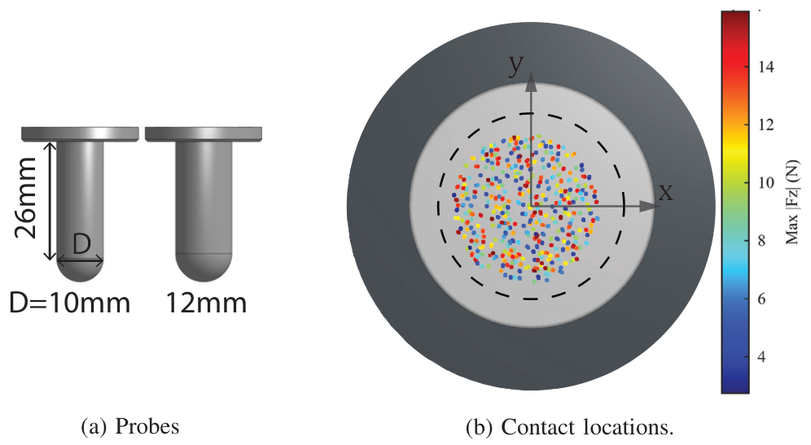
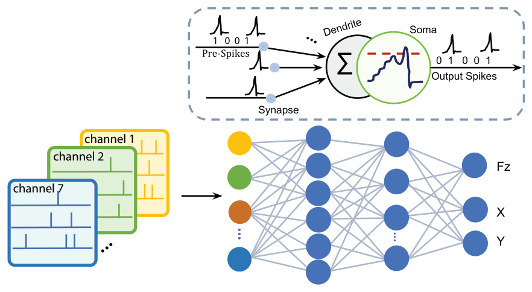
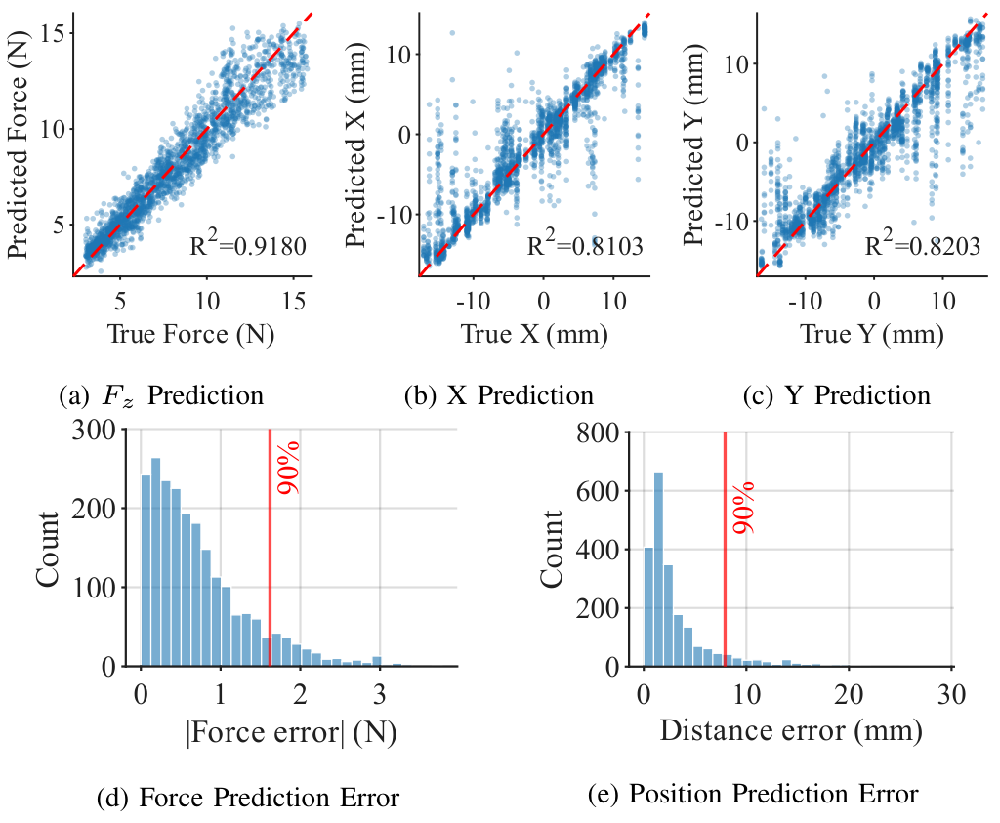
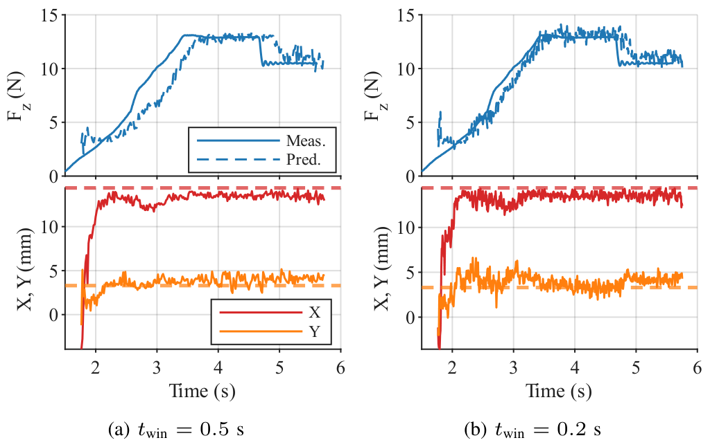

We present a neuromorphic optical tactile sensor capable of detecting contact force and position across a 40 mm sensing area using only 7 channels of event-driven digital spike signals. Unlike prior neuromorphic tactile sensors that rely on exotic materials such as memristors or PiezoFETs, or bulky event-based cameras, our design is built entirely from off-the-shelf components — IR LEDs and phototransistors embedded in silicone rubber — eliminating the need for ADC conversion or microcontroller-based polling. The sensor operates on an analog Leaky Integrate-and-Fire (LIF) circuit that generates sparse voltage spikes directly from optical signals, where spike firing rate encodes applied force and spatial firing patterns encode contact location. To decode these signals, we employ a Spiking Neural Network (SNN) trained on 714 recordings across multiple probe sizes. The best configuration achieves a force estimation MAE of 0.73 N and a mean distance error of 3.3 mm, demonstrating that rich tactile information can be extracted from a sparse, low-channel neuromorphic front-end.



Below ~3 N the sensor is silent, so it is event-driven by construction. Above that, firing rate rises with force: gradually from 3–10 N, steeply from 10–12 N, then saturating near 14 N.


Each channel's light path crosses the sensor differently, so pressing off-center mainly excites the channels whose paths run nearest the contact. In these clips the probe sits over a single light path, and the neuron on that path fires while the other stays quiet or fires only weakly.

Each line is one LED→phototransistor path, drawn with width proportional to its firing rate. The black dot marks the probe.
Channels orthogonal to the contact also respond, likely through light bouncing off the reflective walls. That gives the decoder extra spatial cues.


Spike counts from the 7 channels are binned at 30 Hz and fed to a fully connected SNN of LIF neurons (256–512–256, β = 0.95), trained with snnTorch. It jointly regresses contact force Fz and position (x, y).

All models use the same binned spike input, loss and split. The SNN matches GRU/LSTM accuracy at 0.5 s and is best at 0.2 s. It uses far fewer dense MACs, with most of its compute as sparse, spike-driven synaptic operations.
| twin | Model | Fz R² | Fz MAE (N) | X,Y R² | MDE (mm) | Params | MACs | SynOps |
|---|---|---|---|---|---|---|---|---|
| 0.5 s | MLP | 0.91 | 0.79 | 0.69 | 4.7 | 292.9K | 289.8K | – |
| GRU | 0.93 | 0.68 | 0.80 | 3.4 | 993.8K | 14.8M | – | |
| LSTM | 0.92 | 0.71 | 0.79 | 3.4 | 1.32M | 19.8M | – | |
| SNN | 0.92 | 0.73 | 0.82 | 3.3 | 267.8K | 26.9K | 1.55M | |
| 0.2 s | MLP | 0.88 | 0.91 | 0.61 | 5.7 | 276.7K | 273.7K | – |
| GRU | 0.89 | 0.83 | 0.66 | 5.0 | 993.8K | 5.93M | – | |
| LSTM | 0.90 | 0.83 | 0.67 | 4.9 | 1.32M | 7.91M | – | |
| SNN | 0.90 | 0.80 | 0.76 | 3.9 | 267.8K | 10.8K | 604.9K |
MACs and SynOps are architecture-level compute proxies, not system-level energy measurements.

Spikes are fed to the SNN in a continuous stream, with no explicit segmentation. A 0.5 s training window gives smoother but delayed force tracking (34 ms lag). A 0.2 s window cuts the lag to 2 ms, at the cost of noisier output.
@inproceedings{huh2026sensing,
title = {Sensing with Spikes: Neuromorphic Optical Tactile Sensor for Contact Force and Position Detection},
author = {Huh, Tae Myung and Lin, JieLiang and Cheng, Sean and Kembay, Assel and Eshraghian, Jason},
booktitle = {IEEE/RSJ International Conference on Intelligent Robots and Systems (IROS)},
year = {2026}
}